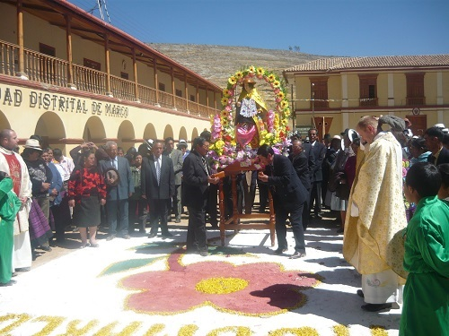

Templo de Guadalupe |
En el centro de Cuitzeo se construyó un templo dedicado a la Virgen de Guadalupe. Su estilo es menos ostentoso que el convento de Santa María Magdalena, no obstante conserva los detalles arquitectónicos básicos del barroco, como la imagen finamente tallada de la virgen en la entrada | |
Lago de Cuitzeo |
Lago de Cuitzeo alberga 21.500 aves playeras de 20 especies, incluyendo 1,5% de la población mundial de Himantopus mexicanus, y por eso es un Sitio de Importancia Regional. Otras especies identificadas en el lago con números incluyen Recurvirostra americana, Phalaropus tricolor, y Charadrius nivosus. | |
Conjunto Conventual de Santa María Magdalena |
La fachada del templo es de estilo plateresco, trabajada por el indio mexicano Francisco Juan Metl y presenta piedras talladas en forma de pericos y otras aves, vegetales, querubines y columnas ricamente labradas. Encima de la cornisa se advierte el corazón traspasado, símbolo de la orden agustina. Actualmente el edificio alberga el Museo del Grabado Mexicano. | |
Templo del Hospital Franciscano |
Su nombre original es Templo del Hospital Franciscano, y su edificación se llevó a cabo durante el siglo XVIII. Su fachada es renacentista, data del siglo XVI pero cuenta también con unos altares del siglo XIX. En el altar mayor se puede ver un frontal de madera tallada y dorada. Está dedicado al fundador de la orden franciscana. | |
Zona arqueológica de Tres Cerritos |
Esta zona se trata de un asentamiento prehispánico donde se encontraron los restos de 23 personas y 175 petrograbados; sin embargo, se desconocen las raíces culturales, aunque se ha podido delimitar que existieron por lo menos dos periodos importantes de ocupación: el primero asociado con los desarrollos locales de Cuitzeo en el que se observan elementos cerámicos y arquitectónicos que guardan gran similitud con los provenientes de Teotihuacán; el segundo momento determina la llegada de grupos ligados con el imperio tarasco, quienes utilizaron el sitio para sepultar a sus muertos encima de los muros y dentro de los derrumbes de las estructuras.Tiene un costo desde $40 MXN |
|
Virgen de la Concepción |

Santa María Magdalena |
Incorporación de la Cultura Hispana |